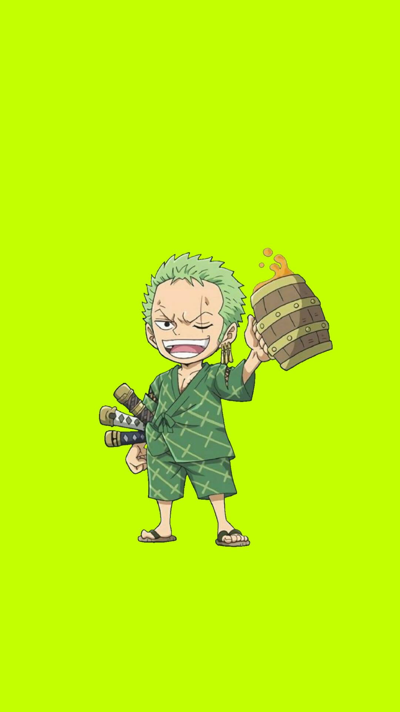

One Piece Characters details
| number | image | name | gender | fruit | type |
|---|---|---|---|---|---|
1. |

|
luffy | male | gomu-gomu | fighter |
2. |
 | zoro | male | -- | swordsman |
3. |
 |
nami | female | -- | navigator |
4. |
 |
usopp | male | -- | shooter |
5. |
 |
sanji | male | -- | cook, fighter |
6. |
 |
chopper | male | human-human | doctor |
7. |
robin | female | hana hana no mi | archeologist, assasin | |
8. |
 |
franky | male | -- | cyborg, ship mechanic |
1.luffy
click on the image below for more about luffy

2. zoro

- zoro:
-
Roronoa Zoro,[20] also known as "Pirate Hunter" Zoro,[9] is the combatant of the Straw Hat Pirates, one of their two swordsmen, one of the Senior Officers of the Straw Hat Grand Fleet,[4] and is publicly recognized as the right-hand man of his crew's captain Monkey D. Luffy.[21][22] Formerly a bounty hunter,[6] he is the second member of Luffy's crew and the first to join it, doing so in the Romance Dawn Arc.[2] click here to know more about zoro the swordman beast
3. nami

-
nami:
-
"Cat Burglar" Nami[11] is the navigator of the Straw Hat Pirates and one of the Senior Officers of the Straw Hat Grand Fleet.[4] She is the third member of the crew and the second to join, doing so during the Orange Town Arc.[19] She is the adoptive sister of Nojiko after the two were orphaned and taken in by Bell-mère. click here for more info about Nami
4. usopp

- usopp:
- "God" Usopp[9] is the sniper of the Straw Hat Pirates and one of the Senior Officers of the Straw Hat Grand Fleet.[2] He is the fourth member of the crew and the third to join, doing so at the end of the Syrup Village Arc. Although he left the crew during the Water 7 Arc, he rejoined at the end of the Post-Enies Lobby Arc.[16]
5. Sanji

- Sanji:
- "Black Leg" Sanji,[12] born as Vinsmoke Sanji,[21][22][23] is the cook of the Straw Hat Pirates and one of the Senior Officers of the Straw Hat Grand Fleet.[5] He is the fifth member of the crew and the fourth to join, doing so at the end of the Baratie Arc. Born as the third son and fourth child of the Vinsmoke Family[24] (thus, making him a former prince of the Germa Kingdom), he disowned his family twice, once in his youth and again after reuniting with them as an adult.[25] After fleeing the Vinsmokes as a child, he eventually entered the care of Zeff as the sous chef of the Baratie, where he would remain until he met Monkey D. Luffy, who convinced him to join his crew.
7. Robin

- Robin:
- Nico Robin,[17] also known by her epithet "Devil Child"[7] and the "Light of the Revolution",[8] is the archaeologist of the Straw Hat Pirates and one of the Senior Officers of the Straw Hat Grand Fleet.[3] She is the seventh member of the crew and the sixth to join, doing so at the end of the Arabasta Arc. She temporarily left the crew during the Water 7 Arc but rejoined during the Enies Lobby Arc. Robin ate the Hana Hana no Mi at a young age, giving her the power to reproduce her body parts (or her entire body) on any surface at will. As the sole survivor of the destroyed West Blue island Ohara, she is currently one of only two people in the world known to have the ability to read and decipher Poneglyphs, a skill which is considered forbidden and threatening to the World Government. She acted as the vice president of Baroque Works as "Miss All Sunday",[1] serving and partnering herself directly with the organization's president; the ex-Warlord: Crocodile, who operated under the codename "Mr. 0". She was a secondary antagonist of the Arabasta Saga, before joining the Straw Hats. Her dream is to find the Rio Poneglyph which tells the true history of the world, specifically the Void Century. She gained a bounty of Beli79,000,000 at the age of 8 due to her ability to read poneglyphs after the destruction of Ohara. It later increased to Beli80,000,000 after the Straw Hats invaded Enies Lobby to rescue her and escape. After the Dressrosa Arc, it was increased to Beli130,000,000. Following the Raid on Onigashima, her bounty was increased to Beli930,000,000.[3]